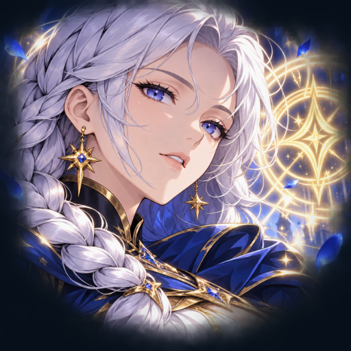

<- all projects

Sigil Shuffle
PC
Volume
Live
Build an anime spell deck, reposition foes and chain powerful sigil reactions.
Sigil Shuffle is an anime deckbuilding roguelike where Lune uses movement cards, enemy intent and linked sigils to turn a compact spell deck into a powerful plan. Play cards onto a five-by-five battlefield, read the red intent tiles, then shift enemies, line up piercing attacks and leave runes for the next reaction. Mix three schools, Ember, Tide and Astral, across 90 card variants, and collect relics across 12 effects and three tiers. Climb 30 campaign floors past six guardians, then try the daily tower or endless ascension.